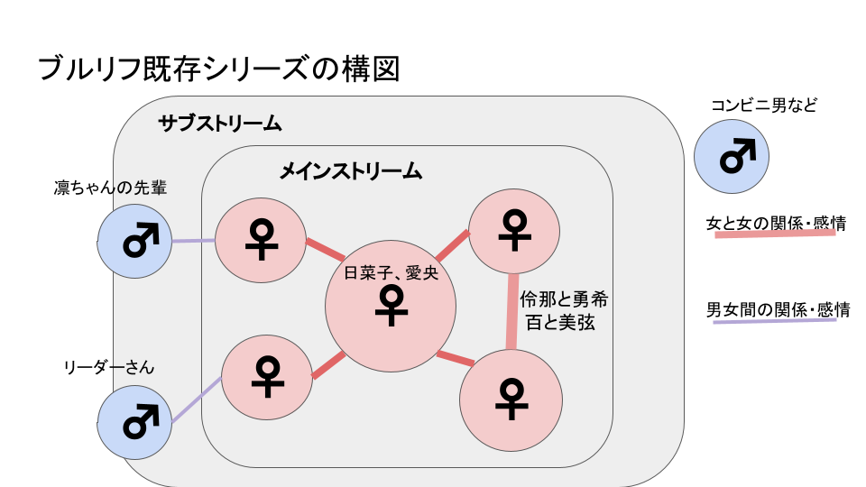
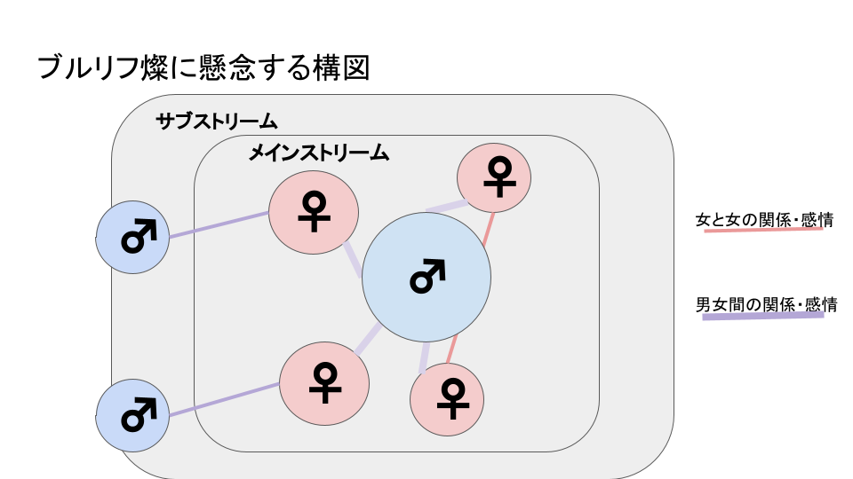
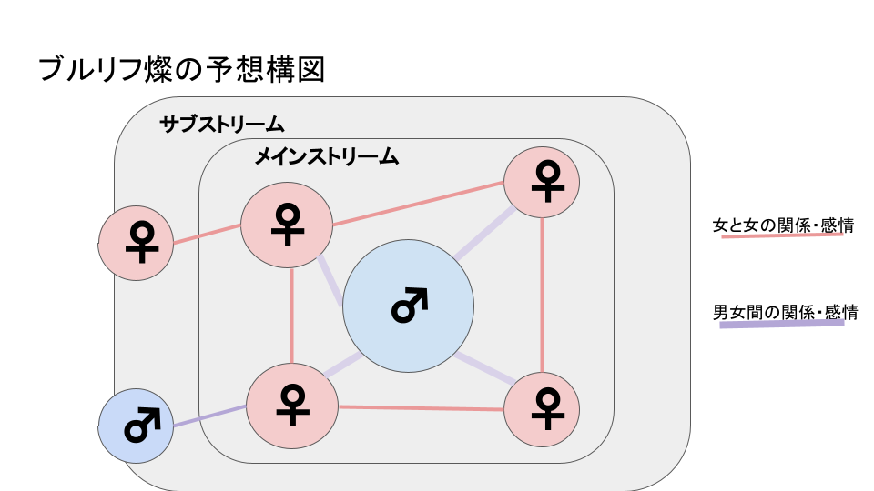

ブルリフ燦に抱いていた淡い期待が砕けた話
目次
本記事は週刊ファミ通 2022年11月24日号 No.1771に掲載されているBLUE REFLECTION SUN/燦1の開発インタビュー記事に対して、貧弱百合オタクが自身の発狂を鎮めるために綴った記事です。
冷静さを取り戻すための記事ですので、対象タイトルに対して怒りを燃やし続けたい方には向かない内容となっています。
正体の分からない怒りや混乱に苦しんでおり、それをなんとか鎮めたい方にとっては、少しでも落ち着くきっかけになってくれれば幸いです。
既存シリーズ2のネタバレを含むことに注意してください。
前提
ブルリフ燦とは
ブルリフ燦は、ブルリフシリーズの新規メディアミックスプロジェクトの3部作の1作として発表されました。
R,S,Tの頭文字を持つそれぞれの作品3は、原作であった幻の後を描くものとして、アルファベット順に時系列を並べたものである、とされています。4
Tの発売がちょうど1年くらい前で、それからほとんど情報がないまま過ごしてきましたが、11月になって情報が解禁されました。
百合、百合作品とは
本記事の内容をご理解いただくためには、百合とは何かについて、ある程度認識を共有しておく必要があります。
本記事において、百合とは、2018年頃に百合オタクの間で広く共有されたであろう内容に従い、以下のように定義します。
女性同士の関係や感情5、またはそれにフォーカスしたもの。
詳細については百合とは何か及び、対象記事からリンクされているインタビュー記事をご参照ください。
この定義に従うと、百合作品とはすなわち、女性同士の関係や感情にフォーカスした作品を指す言葉になります。
フォーカスした、というとかなり曖昧であったり、この定義を必要十分なものであるとみなすべきかどうかには議論の余地がありますが、本記事においては可能な限り論拠を述べた上で、筆者の主観によって百合作品である/なしを判定します。
ブルリフシリーズは百合作品であったか
ひとつずつ確認していきましょう。
まず、ブルリフ幻については間違いなくYESです。
星ノ宮女子高校における、白井日菜子を中心とした百合作品です。
主人公である日菜子と、他の面々のふれあいを通じて、日菜子自身が怪我とともに負った心の傷から立ち直る物語です。
キャラクターによっては男性との関わりが描かれることもあります6が、あくまで作品がメインでフォーカスしているのは日菜子とメインメンバーのふれあいです。
帝についても、YESと言って良いでしょう。
星崎愛央とメインメンバーのふれあいや、伶那と勇希の関係も強くフォーカスして描かれていました。
男性との関わりの描写についてもいくらか描かれています7が、決して作品のメインではありませんでした。
澪もまた、YESです。
リフレクター同士のバディという関係にフォーカスして描かれており、作中に男性がほとんど登場しませんでした。8 9
以上より、燦以外の既存作品全てが百合作品であったと言えます。
と言い切りましたが、そうでない可能性も検討せねばなりません。
3作全てに共通しているのは、女の子同士の関係や感情を土台として、中心人物が未来へ踏み出していく姿へのフォーカスです。
白井日菜子は怪我とともに負った心の傷から立ち直り、星崎愛央や雫世界のリフレクターたちは日常を取り戻すために新しい世界へと向かい、水崎紫乃は陽桜莉たちに手を引かれて想いと向き合うようになります。
ブルリフシリーズが描きたかったきれい10とは、土台となっている女の子同士の関係や感情そのものではなく、その上にある、女の子が未来へ踏み出す姿だったのだとすれば、シリーズの真のフォーカスは女の子同士の関係や感情にないと言ってしまうことも不可能ではありません。
いや、土台にフォーカスせずには描写できないんだからこの理屈には無理があるだろ、と自分でも思いますが、ブルリフシリーズの根底にあるものが必ずしも百合そのものでないと捉えることも可能ではあるのです。
これまでのシリーズ作品が百合作品と呼べるものであったのに対して、新作がそうでなくなりつつ、シリーズの根底にあるものを大事にし続けることも、不可能とは言い切れません。
こう理屈をこねるとどうとでも言えるので、最後には筆者の主観によってこれを決めなければなりません。11
本記事では、後述するように、筆者として百合に集中できるコンテンツであったという理由から、シリーズ3作とも百合作品であると結論付けます。
ブルリフシリーズに抱いていた幻想
女の子同士の関係や感情だけが描かれる作品でないことは、一番最初の幻の時点からはっきりしていました。
しかし、メインで描かれていたのは女の子同士の関係や感情です。

作中での関わりにフォーカスして描かれているものをメインストリーム、描かれているものの特別にフォーカスしているわけではないものをサブストリームとして、図にしました。12
百合オタク13が期待しているのは、赤い太線で描かれている関係や感情です。
少なくとも筆者は、そこに集中できる作品のことを百合作品と呼ぶ傾向にあります。
そして、ブルリフの既存シリーズは図にあるように、ノイズとなる異性間の話がメインストリームの外縁にあったため、百合に集中できる14コンテンツでした。
帝で詩帆やきららが、Sの登場人物と目されるリーダーさんに言及した時には嫌な予感がしたものですが、ここまで3作で上記の構図を守ってきたのに、今更崩してきたりはしないんじゃないか、という希望的観測のもと、言及は避けてきました。
ところが、それは幻想でした。
燦への懸念

図の通りです。これまで、作品の中心に据えられてきた主人公のポジションに、燦では男性があてがわれました。
女の子だらけのど真ん中に男性主人公が生えてきたとなれば、当然、メインストリームで描かれる関係や感情は、割合として男女間のものが多くなるであろうと予想できます。
そして、それに隠される形で女の子同士の関係や感情の描写が希薄になっていくんではないか、という懸念が爆発しました。
これが、蛇蝎のごとく嫌われている、百合に挟まる男概念です。
コンテンツ受容者が求めているものを覆い隠し、メインストリームをノイズで溢れさせる唾棄すべき邪悪として、百合オタクに疎まれてきたものです。
プレイヤー＝主人公と捉えられがちなソーシャルゲームという媒体、主人公をメインキャラクターたちの人間関係の中心に据えてきたブルリフシリーズ、そしてなぜか日菜子から重要なことを託されたりメンバー全員から視線を向けられるPVと、世に数多あるであろうハーレムモノを想像させやすい展開に、筆者も頭に血を上らせてしまいました。
上記の図は、その状態で想像してしまった最悪のケースを表現しており、かなり恣意的です。
落ち着いて想像する
さて、落ち着いて考えてみると、ブルリフシリーズはガストの作品です。
アトリエシリーズではメインストリーム上に男性キャラクターを置きつつ、各キャラクター同士の関係や感情をバランスよく描いています。
よるのないくにでも、男性キャラクターの描き方は非常に秀逸でした。
バディという関係性は澪から引き続き楽しめるとのことなので、最悪の想像にあったような、関係性を覆い隠すレベルで主張が強い男性主人公というわけではないと思われます。
おそらく、こんな感じに着地するんではないでしょうか。

これでも、既存シリーズに比べてノイズは圧倒的に多いので、百合だけを目的に摂取し続けられるコンテンツであるかどうかは極めて疑わしいところです。その覚悟をもって履修する必要があるでしょう。
これを期にシリーズから離れるファンも少なくないでしょうし、筆者自身もCBT以降、状況によっては早期に離れてしまう可能性を視野に入れています。
今回の主人公はかなり気を使って作られているとのことで、詩帆やきららからの信頼も厚いことが帝で伺えています。
しっかり人格もあるとのことで、ロジックス・フィクサリオ15級にいい男やってくれよな、と願うばかりです。
それはそれとしてあいつは何者だ
あの日菜子が「あなたなら」と助けを求める存在として描かれている彼は、いったい何者なのでしょう。
ファミ通のインタビュー記事には、司城あやかなる人物16から日ノ杜学園の特殊部隊を任されているようなスクショがあり、何かしらの実績や才能を持っていて、信頼を得ていることが伺えます。
司城あやかがユズ、ライムの父である司城教授と関連している人物であることはほぼ疑いようがなく、しかし詩帆たちは司城教授がリーダーを務めていたAASA17とは別の組織で活動していたと、帝で語っています。
この辺りは、筆者としては百合に関係なくシリーズファンとして気になっているポイントです。
百合を大きな魅力のひとつとしていたシリーズへの信頼18が砕けた今、こういった気になりポイントをきっちり認識して履修意欲を保つしかない、ということではあるのですが……。
まとめ
ブルリフ燦に対する心の整理
ブルリフ燦について、以下の内容を検討し、心を整理しました。
- 百合作品と呼べないもの19になる可能性が十分にあること
- それはブルリフシリーズの根底にあるものと矛盾しないこと
- 男性主人公ハーレムモノと化して百合を完全に踏みにじるような作品になるとはまだ決まっていないこと
- 百合に関わらずシリーズファンとして気になる要素はあること
- 筆者としての最終判断はCBT以後に実際に見てから下すこと
正体のわからない怒りや混乱を鎮めるために
本記事の内容に同意できなかったとて、それは何ら不自然なことではありません。
この記事に綴られた内容の大半は筆者自身を落ち着けるためのものですから、全ての読者にとって真実であるとは限りません。
言葉とは、感情を制御するための強力なツールです。
外に向けて発表するのではなくとも、自分の感情や考えをできるだけ理性的に言語化してみてください。
フラグメントの暴走をなんとかするためには、自分の感情を理解する必要があります。
本記事で行った言語化というステップが、筆者同様に苦しむ誰かにとって、落ち着くための一歩になってくれれば幸いです。
- 以下、BLUE REFLECTIONをブルリフ、新作を燦あるいはSとする。
- BLUE REFLECTION 幻に舞う少女の剣(幻), BLUE REFLECTION RAY/澪(澪), BLUE REFLECTION TIE/帝(帝)の3作。
- Ray=澪、Sun=燦、Tie=帝。
- Rでは幻で日菜子がダアトを跳ね返した後の話が描かれており、TではRで降っていた灰によって世界が滅亡した後の話が描かれている。Sのキーパーソンである詩帆ときららが、灰による脅威と戦っていたことに言及している。
- 恋愛関係、恋愛感情に限らず、関係や感情の種類を問わない。
- 司城姉妹とその父である博士、亜子とその父、凛と先輩、しほりと男子生徒の関わりなどに言及される。
- 詩帆、こころと悪ガキたち、きららとその父、詩帆、きららとリーダーさんなど。
- 序盤こそモブに男性はいたが、後半になるとモブですら男性が描かれないようになっていた。
- モブとして強烈な印象を残したコンビニ男も、メインストーリーに関わる存在ではない。
- シリーズ原点となる幻のキャッチコピーは「駆け足のきれいは過ぎていく」。
- もちろん、読者各位においては各々の主観に応じて結論を出してほしい。
- クソ雑魚作図能力で大変申し訳無い。
- 主語が大きいが、ある程度の同意は得られるものと思っている。
- もちろん、個人差はある。外縁部にすら男性に存在してほしくない思想の方も少なくないだろう。
- エスカ＆ロジーのアトリエの主人公のひとり。ロジー。
- ユズ、ライムの母か、あるいは別の血縁か。
- 澪公式サイトでは「リーダーを務めていた」と過去形で書かれているのも気になる。
- 幻想。
- 百合に集中できないもの。